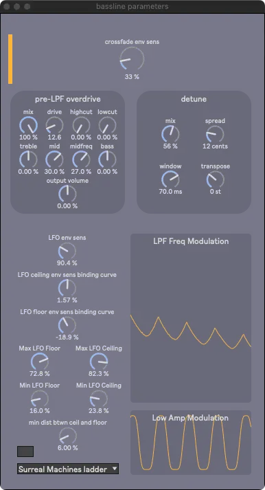
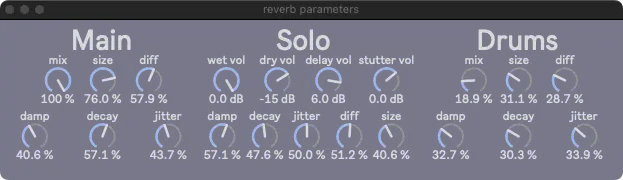

Overview
Menubar

The following windows may be opened via the FX Parameters menu:
Main Window

Closing this window quits SousaFX.
Status Bar
The menus on the top left adjust the audio engine's settings, including the sample rate, signal vector size, I/O vector size, Overdrive, and Interrupt, which should be set to 48000, < 128, < 128, On, and On, respectively.
The x toggle makes the white border flash in time with the metronome.
To the right of the toggle is the tempo in beats per minute, which can be set by tapping North.
Next is the time signature numerator, which can be set by tapping North while holding Start and Select.
Next is the audio engine power button, along with the CPU meter. The audio engine will auto-start when SousaFX is launched, and can be toggled off to mute SousaFX.
Displays
To the top left of the white box, is the game controller input display.
To the right are the input volume meters.
Below are the Looper Status displays for the tuba bassline looper, and drum looper.
| color | status |
|---|---|
| grey | cleared |
| red | recording |
| green | playing |
| orange | stopping |
Dials
-
Noise Gate Thresh
Sets the volume underneath which the tuba's input signal will be silent. The louder the environment is, the higher this will need to be.
-
Env Sens
Sets the main envelope sensitivity, which should generally be around 180%
-
Metro Volume
Sets the volume of the metronome in the monitor outpts.
-
Alert Volume
Sets the volume of the looper status alerts in the monitor outputs.
-
Drum Volume
Sets the volume of the snare, clap, and tom samples.
-
Kick Volume
Sets the volume of the kick samples.
Save Restore
The Save button saves all the parameters in the main window (except for the window layout), and all the FX parameters windows.
The Restore button discards all changes and restores the previous save.
Layout
On the bottom left is a way to save window layouts. Click the number box and press the up or down key to cycle through the window layout presets. Type a description in the textbox, and click "save layout" to save the current window layout with the description to the current preset number. Click "set initial" to set the current preset number as the initial preset to load on launch.
Bassline

crossfade env sens
This dial adjusts the envelope sensitivity for the crossfader, which crossfades between the overdriven modulated lowpass filter sound, and the dryer detuned sound. When the tuba begins a phrase, the crossfader starts on the the dry sound, then quickly follows the envelope over to the filtered sound. The louder the tuba plays, the less filtered, and dryer, the sound becomes.
The crossfade's range is adjusted via the "envelope crossfade position" binding.
LFO env sens
This LFO modulates the lowpass filter frequency to create the dubstep wobble bass sound.
The louder the tuba plays, the higher the LFO's ceiling and floor become.
The "LFO env sens" dial adjusts the incoming envelope sensitivity for the LFO's ceiling and floor.
In addition, two bindings adjust the ceiling and floor envelope sensitivities separately as well, with a slightly different taper than the "LFO env sens" parameter:
-
LFO floor envelope sensitivity
-
LFO ceiling envelope sensitivity
The following dials curve the aformentioned bindings:
-
LFO ceiling env sens binding curve
-
LFO floor env sens binding curve
The four dials below adjust the floor and ceiling's minimums and maximums:
-
Max LFO Floor
-
Min LFO Floor
-
Max LFO Ceiling
-
Min LFO Ceiling
The "min dist btwn ceil and floor" dial sets a minimum distance between the ceiling and the floor so that they never overlap.
LPF menu
There are five different lowpass filters to choose from:
-
Surreal Machine's ladder
-
Korg 35
-
Andrew Simper's SVF
-
Vadim Zavalishin's diode ladder
The toggle on the right allows the lowpass filter type to randomize whenever the bassline looper starts looping.
Detune
-
mix
wet / dry mixer, 100% is all wet signal
-
spread
the amount of detune between the left and right channels in cents
-
window
longer window = higher quality, but higher latency
-
transpose
overall transposition in steps
Overdrive
-
mix
wet / dry mixer, 100% is all wet signal
-
drive
overdrive amount
-
high cut
-
low cut
-
treble
-
mid
-
midfreq
-
bass
-
output volume
Compressors and Limiters

This window displays two limiters and six compressors
-
init
This limiter is immediately after the mic input and cuts the top off of all the attacks.
Note
There's a 100 Hz crossover filter that separates the tuba's highs and lows pre-overdrive, to keep the lows clean.
-
post-xover-lows
This compressor is for the clean lows.
-
pre-xfade-wet
This compressor is for the overdriven modulated lowpass filter sound.
-
pre-xfade-dry
This compressor is for the detuned dry sound.
-
solo
This compressor is for the tuba solo, which only occurs while the bassline looper is looping.
-
final
This compressor is for the final mixdown.
-
last
This limiter is after the final compressor.
Delays

Separate delays for the main input, the bassline looper, the tuba solo, and the drums.
-
output volume
The delay's output volume.
-
filter toggle
Toggle the lowpass filter in the delay's feedback loop.
-
spread
Adjust the difference in delay time between the left and right channels.
-
input gain
The delay's input volume.
-
thresh
Set the threshold of the limiter in the delay's feedback loop.
-
lookahead
Set the lookahead of the limiter.
-
attack
Set the attack of the limiter.
-
release
Set the release of the limiter.
-
reduction amount
Displays the amount of gain reduction.
Reverbs

Sets the reverb parameters for the bassline, for the tuba solo, and the snare clap & tom.
-
Main
Main reverb send for everything. Keep mix at 100%
-
Solo
Reverb for tuba solo, with separate dry and wet output volumes, as well as "dry" delay and "dry" stutter volumes.
-
Drums
Reverb for the snare, clap, & tom.